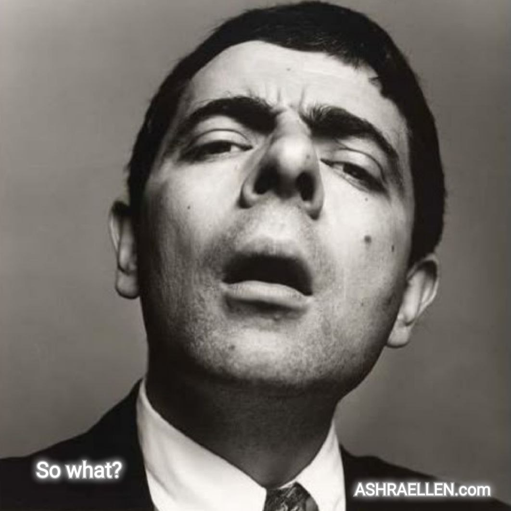
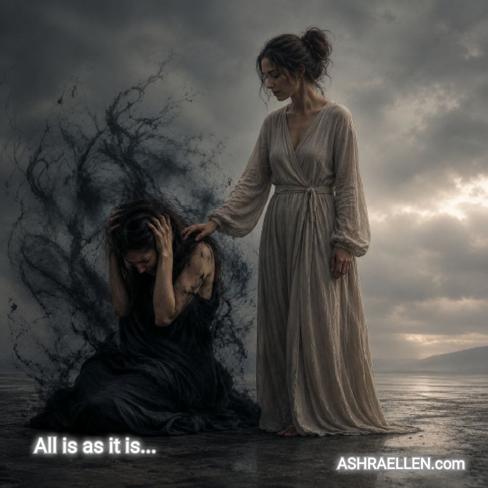
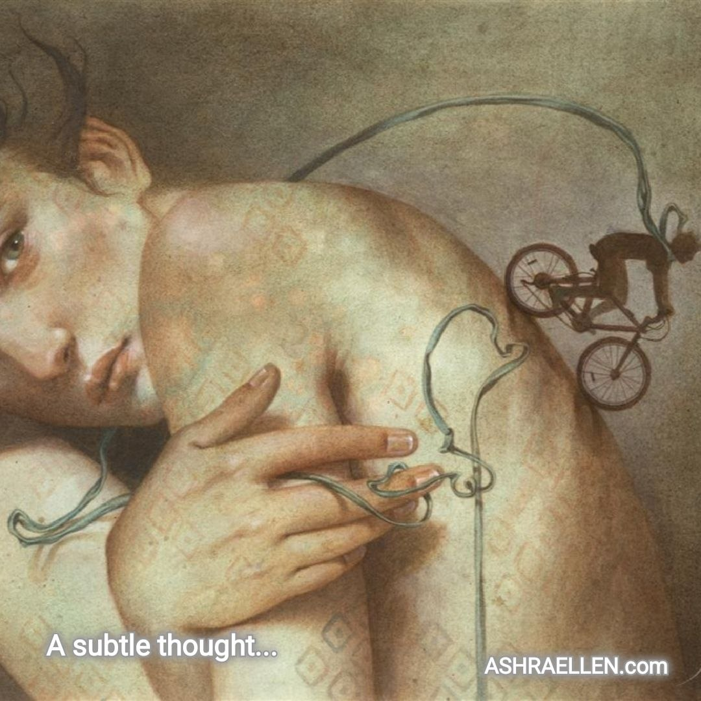
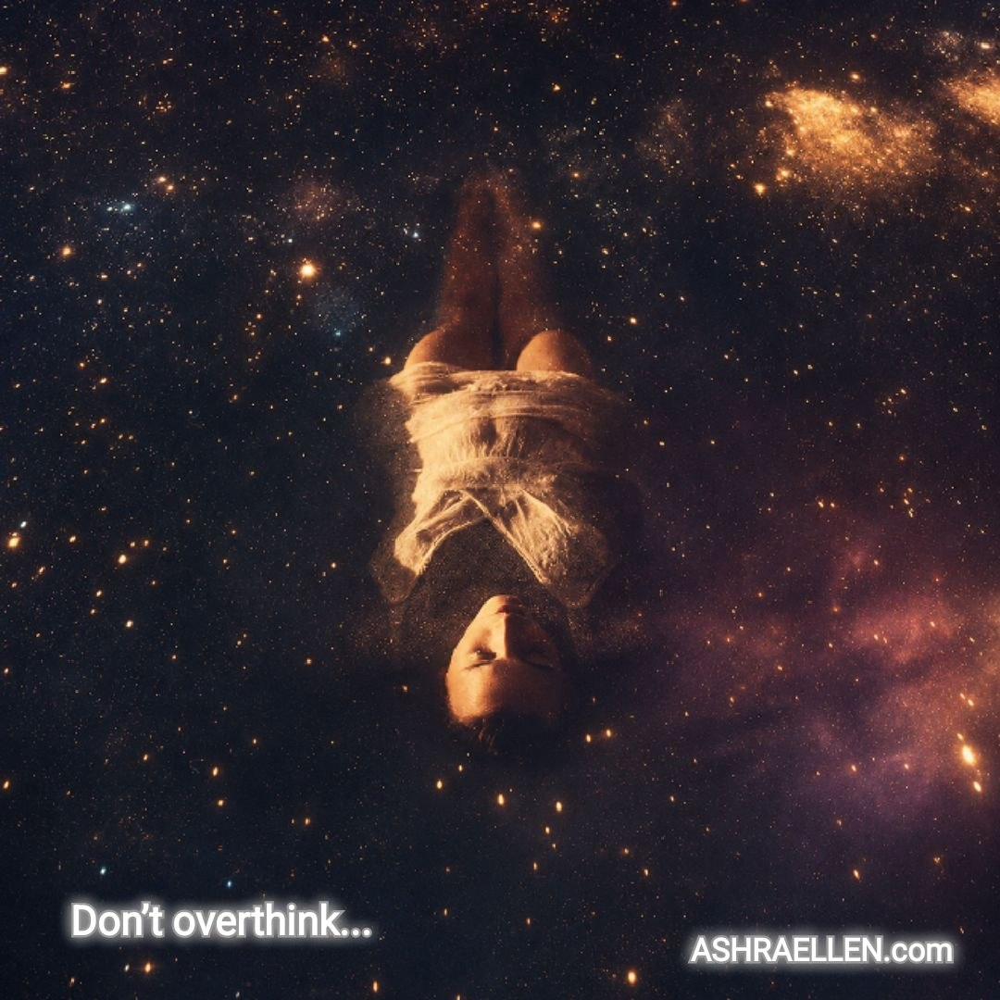
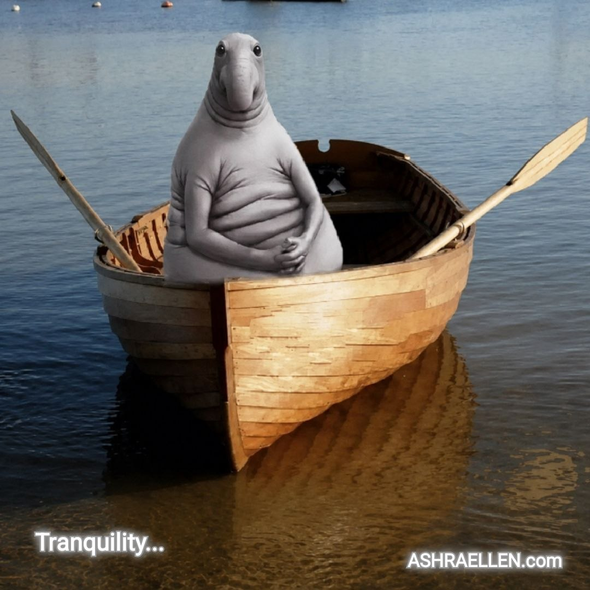
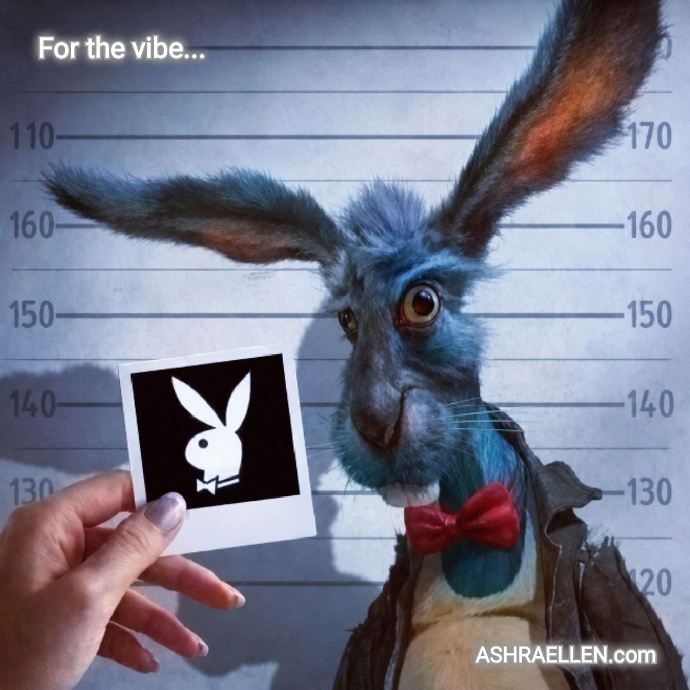

Апорныя думкі
ДУГА 0003
Трэцяя дуга апорных думак
Прыняцце факта, канец лішняй вайны, тонкасць разумення, вяртанне да рэальнасці, спакойнае сведчанне і розніца паміж чалавекам і яго вобразам.
Гэтая дуга збірае трэцюю шасцёрку апорных думак публічнага поля Ashraellen. Тут праблема губляе карону, унутраная спрэчка з рэальнасцю завяршаецца, тонкая думка просіць цішыні, факт аддзяляецца ад унутранага серыяла, сведка не замінае, а жывы чалавек аддзяляецца ад свайго вобраза.

Апорная думка 0013
Праблема губляе карону
Праблема не знішчана. Але яе пафас — так.
Адкрыць думку →
Апорная думка 0014
Канец лішняй вайны
Унутраная згода з тым, што ёсць, не параза. Гэта канец лішняй вайны.
Адкрыць думку →
Апорная думка 0015
Тонкая думка патрабуе цішыні
Тонкая думка не абавязаная станавіцца грубай, каб яе заўважылі.
Адкрыць думку →
Апорная думка 0016
Быў адзін факт
Быў адзін факт. А пакут — на тры сезоны з працягам.
Адкрыць думку →
Апорная думка 0017
Сведка не перашкаджае праўдзе
Сведка — гэта той, хто не перашкаджае праўдзе стаць бачнай раней часу.
Адкрыць думку →
Апорная думка 0018
Вобраз не можа быць шчаслівым
Вобраз можа атрымаць прызнанне. Але не можа быць шчаслівым.
Адкрыць думку → — mark of presence
— mark of presence